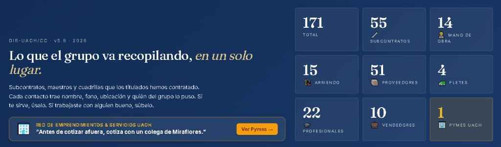

Revisa tu obra o tu casa nueva antes de pagar
Soy Constructor Civil con más de 20 años en terreno, desde carpintero de terminaciones y obra gruesa hasta jefe de obra. Reviso tu inmueble o tu obra con instrumentos de medición y te entrego un informe digital con fotos y observaciones, en la zona sur de Chile.
Inspección técnica con criterio de obra
Mi listado de control se basa en un manual de tolerancias de la construcción, para que cada observación se pueda medir y no dependa de la opinión.
Recepción de inmuebles nuevos
Revisión completa antes de firmar la entrega con la inmobiliaria: instalaciones, terminaciones y humedad.
- Listado de control con tolerancias
- Informe con observaciones y fotos
Diagnóstico de humedad y fisuras
Detección de filtraciones, condensación y fisuras, con medición en muros y hormigón.
- Termografía y medidor de humedad
- Informe técnico para respaldar tu reclamo
ITO particular para obras
Supervisión de remodelaciones, ampliaciones y autoconstrucción, para que el contratista cumpla planos, calidad y presupuesto.
- Control de avance y calidad en terreno
- Revisión de partidas y estados de pago
Instrumentos con los que reviso
Lo que no se ve a simple vista se mide.
- Cámara termográfica infrarroja. Zonas frías o húmedas detrás de muros y cielos.
- Medidor de humedad. Paredes y hormigón.
- Cámara endoscopio. Ductos, cavidades y lugares sin acceso.
- Detector de gas combustible. Revisión de artefactos e instalación.
- Probador de enchufes y diferencial. Voltaje, conexión y protección eléctrica.
- Anemómetro y termómetro. Ventilación y condiciones ambientales.
Quién está detrás de JEMS
Soy Juan García, Constructor Civil (UACh). Empecé en obra y conozco las fallas de construcción desde adentro porque las he tenido que corregir.
Trabajé como carpintero de terminaciones y de obra gruesa, fui capataz y jefe de obra, y por más de 6 años dirigí equipos de 40 personas, incluyendo toda su documentación laboral. Esa experiencia es la que uso para inspeccionar.
JEMS está partiendo. Por eso cada cliente trabaja directo conmigo, sin intermediarios.
Tecnología para quienes trabajan en construcción
Además de inspeccionar, desarrollo herramientas digitales pensadas desde la obra.
Páginas y aplicaciones web para colegas
Creo el sitio web de tu empresa o de tu servicio como arquitecto, constructor, maestro o profesional independiente: claro, rápido, que se vea bien en el celular y que te contacten directo por WhatsApp. También desarrollo aplicaciones web a medida para resolver una necesidad concreta de tu negocio. Precios accesibles, con valores de referencia publicados.
- Diseño propio, sin plantillas genéricas
- Formulario de contacto conectado a WhatsApp
- Aplicaciones web a medida, usables desde el celular
- Publicado y funcionando, listo para compartir
Soy el creador de Eje Austral, un directorio de contactos en formato de aplicación web (PWA) de uso privado para la red de titulados de Construcción Civil e Ingeniería en Construcción de la UACh. Cuento además con el apoyo técnico de mi hijo, que está egresando de Ingeniería Civil Informática.
Precios accesibles
Valores de referencia para páginas web. El precio final depende de lo que necesites y te lo envío por escrito antes de empezar.
-
Página web profesional:
— Transferencia bancaria directa: $75.000
— Tarjeta de crédito (hasta en cuotas): $78.000 -
Página + correos corporativos:
— Transferencia bancaria directa: $95.000
— Tarjeta de crédito (hasta en cuotas): $99.000 - Mantención y cambios: desde $9.990 al mes (opcional)
Valores con IVA incluido. Pago con tarjeta disponible mediante link de pago (permite cuotas). Sin costo mensual de hosting. Aplicaciones web a medida: se cotizan según el proyecto.

Cómo trabajo
Antes de empezar sabes qué recibes, cuánto cuesta y qué pasa después.
Alcance y precio por escrito
Te envío por WhatsApp o correo qué incluye el servicio, el valor y los plazos. Si algo queda fuera, también lo digo.
Lo que hago queda a tu nombre
En una página o aplicación web, el dominio, la cuenta y el código son tuyos. En una inspección, el informe completo con fotos y mediciones es tuyo.
Soporte después de la entrega
Acordamos antes de partir un periodo de soporte para corregir fallas y resolver dudas, con plazo claro.
Pide tu cotización
Cuéntame qué necesitas. Al enviar se abre WhatsApp con tu mensaje listo y te respondo ahí.